Cast the Ray
While working on my game, I encountered a common issue. How to select entities in the game world by clicking on them, and how to handle entity collisions. When you use any modern game engine, those things would most likely be fully covered by a physics engine or simply part of the engine API. But I don’t have such a thing.
Originally, I didn’t want to spend too much time on this; there is a lot more to cover while creating a game from scratch. The laziest approach is relying on AI, just letting it implement all collision-related procedures, and copy-paste them with some possible adjustments. This kinda works until it doesn’t, and you find yourself staring at code you actually don’t understand. So I decided to step back and try to dedicate more time to this.
The usual solution would be to cast a ray from the player/camera position into the world and use the hit information to select an entity or handle collisions, if any.
In this blog post, I’ll try to explain in detail how to implement simple raycasting, focusing on the practical side, and do a little bit of math in a way even I’m able to understand (I’m not really into math).
What is raycast?
You can think about it as a laser beam pointing from a point in the game world in some direction, and we somehow want to detect if this beam hits something in the world, and get some information about the hit point. So let's define our raycast as origin point O and normalized direction vector D.
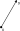
Such a definition of raycast on its own is not enough. We also need to control where we are on this oriented line. Since the direction vector is normalized, we can just multiply it by a scalar, usually called t to control how far from the origin we are. Note that when the direction vector is normalized, t is actually in world units. So to get, for example, point P two units far from the origin in the direction D we do P=O+2D.
This brings us to the general definition of our raycast:

From a practical side, it's good to define some bounds for the t value. We probably don't want it to be negative, and we usually don't want to include hits too far from the origin. To have full control over these properties, we can define t_min and t_max values.
So the full definition of the raycast in code looks like this:
Ray :: struct {
origin: v3;
direction: v3;
t_min: f32;
t_max: f32;
}
Hit Point
By hit point, we mean the exact intersection point of our raycast and the object in the scene. In other words, we're trying to find one point lying on the raycast and geometry at the same time. Based on the raycast definition, we're looking for t value of such a point.
To store collected information about the hit point, I use the following structure:
Hit :: struct {
id: u32;
t: f32;
n: v3;
}
Where id is a unique identifier of the hit object, t value and hit surface normal n. You can include any other information needed.
As you can imagine, calculating the intersection of our ray with a full model triangle geometry might be too complex to start with, so let's take a look at the simplest case possible first.
Ray vs Plane
Probably the simplest case we can implement is checking if our raycast intersects a plane. Crucial construct used in the following calculations is dot product, I'll not go into details explaining it here, you can watch video from Freya Holmér containing a very detailed explanation.
Let's just highlight some algebra-like properties of the dot product (⋅):
- Commutative:
A⋅B=B⋅A - Distributive:
A⋅(B+C)=A⋅B+A⋅C - Scalar multiplication:
(sA)⋅B=s(A⋅B)
Our plane will be defined by the origin point in space P0 and a normal vector N like this:

So in mathematical terms, where P is any point lying on the plane, we can write this:

Note that the dot product is 0 in case its input vectors are perpendicular.
When we're looking for the intersection point, we can just inject our previous raycast definition into the plane definition and solve it for t. Note that I use capital letters for vectors and small letters for scalars (float numbers) here.
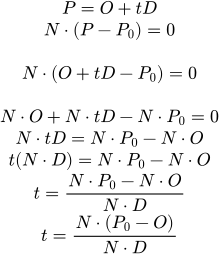
Now we can calculate the value of t, telling us how far from the raycast origin the ray intersects the plane. Thus, to calculate the hit point position, we can use the raycast definition with our t value.
As you may have noticed, we divide by N⋅D, but the denominator cannot be 0. As already mentioned, the dot product is zero when the input vectors are perpendicular; this means our raycast is perfectly parallel to our plane and thus never hits it. We have to check this explicitly in the code.
The final ray vs plane procedure might be implemented like this:
ray_vs_plane :: fn (ray: Ray, plane: Plane, hit: *Hit = null) bool {
o :: ray.origin;
d :: ray.direction;
p0, n :: get_plane(plane);
denom :: dot(d, n);
if math.compare(denom, 0.f, EPS) then return false;
t :: dot(n, sub(p0, o)) / denom;
if t >= ray.t_min && t <= ray.t_max {
if hit {
hit.t = t;
hit.n = n;
}
return true;
}
return false;
}
Ray vs Sphere
Similarly, we can find the raycast collision point with a sphere. The whole equation is a bit more complex; however, it applies the same principles. Our sphere is defined as a center point P0 and a radius r.
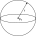
For any point P we can define a sphere as follows:

Note that || here represents vector magnitude. There is also one simple trick I didn't know, we can represent the squared magnitude of any vector as dot product with itself. Thus, we can do the following to make our computation a bit "easier".
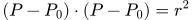
Now we can replace point P with the raycast formula:
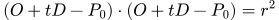
In the next steps, we solve this equation for t. Since it's easy for me to mess up, I do some substitutions here and there to reduce the risk (L and M variables).
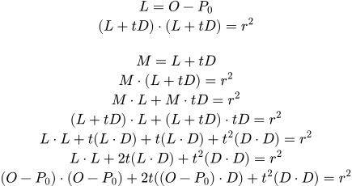
Finally, some rearrangement:
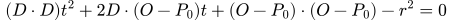
At this point, it's getting quite obvious that we're dealing with a quadratic equation:
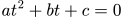
We can write down all coefficients:
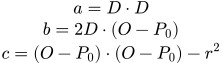
To solve t we can use the quadratic formula (google it):
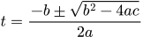
Let's take a look at the determinant first:
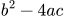
In case the determinant is negative, we cannot calculate its square root. Meaning the raycast completely missed the sphere.
In case the determinant value is zero, the quadratic equation has only one solution, meaning the raycast just touched the sphere at a single point.
Otherwise, we have to pick t greater than t_min and one closer to the raycast origin.
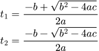
The final ray vs sphere procedure might be implemented like this:
ray_vs_sphere :: fn (ray: Ray, sphere_center: v3, sphere_radius: f32, hit: *Hit = null) bool {
o :: ray.origin;
d :: ray.direction;
p0 :: sphere_center;
r :: sphere_radius;
op :: sub(o, p0);
a :: dot(d, d);
b :: 2.f*dot(d, op);
c :: dot(op, op)-r*r;
det :: b*b-4.f*a*c;
// Quadratic equation does not have any solution, ray misses the sphere.
if det < 0.f then return false;
a2 :: 2.f*a;
detsqrt :: math.sqrt(det);
t1 :: (-b + detsqrt)/a2;
t2 :: (-b - detsqrt)/a2;
// Possible cases:
// t1 < t_min && t2 < t_min: Both hits are behind the raycast origin.
// t1 < t_min && t2 > t_min: We're inside the sphere.
// t1 > t_min && t2 > t_min: We're hitting the sphere and we should pick closest point.
t := t1;
if t < ray.t_min {
t = t2;
}
if t >= ray.t_min && t <= ray.t_max {
p :: add(o, mul(d, t));
if hit {
hit.t = t;
hit.n = div(sub(p, p0), r);
}
return true;
}
return false;
}
Ray vs Axis Aligned Bounding Box
The Axis-Aligned Bounding Box (AABB) is a common simplification for 3D objects in my game. In some cases, we don't need an exact object representation (triangle mesh), and just a simple bounding box is enough. By bounding box, we mean a box encapsulating the whole object defined as minimum and maximum vectors. Axis-aligned means the box is not rotated (defined in the object's local space).
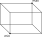
While finding the intersection point with raycast, we can, in fact, reuse knowledge we already have. Every AABB consists of six planes (two planes on each axis). And we already know how to calculate the t value for the ray-plane intersection.
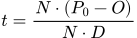
So the goal here is to calculate t for each plane of the bounding box and pick the closest one to the ray origin. There is one simplification we can do, since our bounding box is axis-aligned, the normals of all planes are also aligned (parallel) to the coordinate system axes. For example, the normal of the left face is parallel to the x axis (x = 1, y = 0, z = 0). So we can simplify the equation by taking into account only non-zero normal components. For the left plane of the bounding box, we can write:
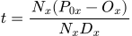
Notice that now we're dealing with scalars, and the equation can be simplified even more:
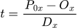
Now we can calculate t values for one pair of planes on the x axis (left and right plane) as follows:
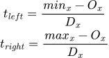
Where a smaller t value is the entry point where the ray enters the box, and a larger t value is the exit point.
We can now calculate t values for all remaining axes (bottom, top, front, back). Notice, we've separated the intersection test into three independent tests: one for each axis. To get the final result, we need to calculate the intersection of all three t intervals. Plotting these intervals might help us to understand what's going on:
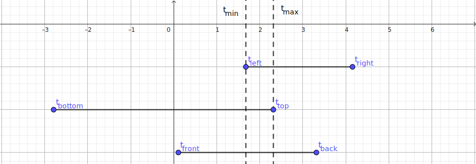
Values t_min and t_max are resulting t values we can use to finalise the intersection test.
When t_min > t_max, we have no overlap in these intervals, meaning the ray misses the box. When t_max < 0, our intersection is "behind" the raycast origin. Otherwise, we take t_min as the result value.
Example of possible implementation:
ray_vs_aabb :: fn (ray: Ray, aabb_min: v3, aabb_max: v3, hit: *Hit = null) bool {
o :: ray.origin;
d :: ray.direction;
// Inverse direction, so we multiply later instead of dividing.
di :: v3.{ 1.f / d.x, 1.f / d.y, 1.f / d.z, };
t_left :: (aabb_min.x - o.x) * di.x;
t_right :: (aabb_max.x - o.x) * di.x;
t_bottom :: (aabb_min.y - o.y) * di.y;
t_top :: (aabb_max.y - o.y) * di.y;
t_front :: (aabb_min.z - o.z) * di.z;
t_back :: (aabb_max.z - o.z) * di.z;
using math;
t_min_x :: min(t_left, t_right);
t_max_x :: max(t_left, t_right);
t_min_y :: min(t_bottom, t_top);
t_max_y :: max(t_bottom, t_top);
t_min_z :: min(t_front, t_back);
t_max_z :: max(t_front, t_back);
t_min :: max(max(t_min_x, t_min_y), t_min_z);
t_max :: min(min(t_max_x, t_max_y), t_max_z);
// if t_min > t_max, ray doesn't intersect AABB.
if t_min > t_max then return false;
// if t_max < 0, ray (line) is intersecting AABB, but the whole AABB is behind us.
if t_max < 0.f then return false;
// Check raycast range.
if ray.t_min > t_min || t_min > ray.t_max then return false;
if hit {
hit.t = t_min;
// Get hit normal.
if t_min == t_min_x {
hit.n = if t_left < t_right then v3.{ x = -1.f } else .{ x = 1.f };
} else if t_min == t_min_y {
hit.n = if t_bottom < t_top then v3.{ y = -1.f } else .{ y = 1.f };
} else {
hit.n = if t_front < t_back then v3.{ z = -1.f } else .{ z = 1.f };
}
}
return true;
}
Ray vs Triangle
A fundamental part of the raycast against the triangle mesh is testing the raycast against a single triangle. A triangle is defined simply by 3 vectors (points) in 3D space. There are actually more methods to do this check. Probably the simplest one is checking whether our raycast hits a plane defined by the triangle, and if so, whether the intersection point with that plane lies inside the triangle's area using barycentric coordinates.
We'll use another approach, the Möller–Trumbore algorithm, which is a bit more compact and gives the desired result right away.
In this case, I had quite a hard time understanding what was going on. All the following depends on what I remember from high school, and that's really not that much. What is even worse is that these concepts are usually taught as a bunch of memorized rules without any deep knowledge of what's going on. Thus, I forget them very quickly without any chance to refresh them using pure logic. I'll try to describe it as best I can, step by step.
First, we need a mathematical way to describe the input triangle and all points it might contain. Each triangle in a triangle mesh is usually stored as a set of 3 vertices. So let's start there. We have a triangle defined by 3 points A, B, and C. Before we begin, let's take a look at some simple cases first. Say we have a 2D triangle formed by basis axis vectors of size one and a hypotenuse connecting them:
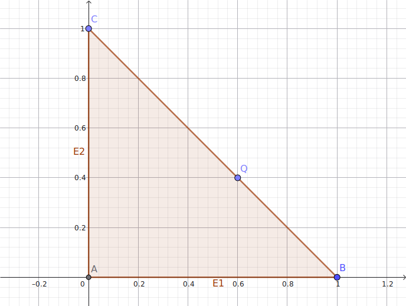
As you can see, B-A forms the edge vector E1, and C-A=E2. In this case, E1 is the same as the x axis, and its length is 1, and E2 is the same as the y axis, and its length is also 1. So we can right away tell that E1=[1, 0] and E2=[0, 1].
Now, to get to the point Q, we need to travel some friction of E1, and add some friction of E2. Let's call these frictions u and v.
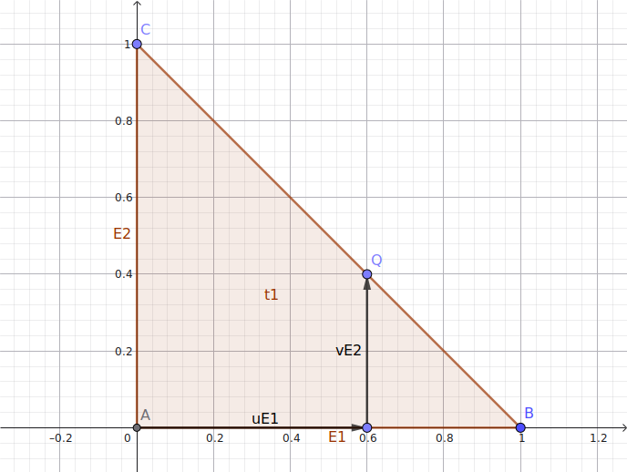
So we have the following:
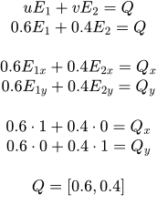
You might ask why we need such a complicated thing for something so obvious. Well, now we have exposed some general properties we can apply to any triangle. All we need is a pair of edge vectors and uv values. There is only one last thing: our triangle might not have point A at the origin, so we need to take this into account by offsetting the whole system by the A vector. So, finally, any point P inside a triangle is defined as follows:
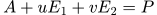
We can write the same thing in a matrix form:
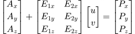
Another key observation we might have here is that to form a triangle, the sum of our coefficients u and v cannot exceed one. If you look at the previous plot we used, the BC line can be defined as u=1-v, thus in the context of our triangle, we have u+v<=1.
Since we have a general equation describing a triangle, we can again inject the raycast definition:
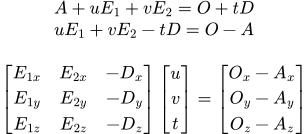
Now we deal with the 3x3 linear system.
Let's call our first matrix containing all coefficients M, then the [u, v, t] vector x, and the right side vector v. To solve this linear system for x, we usually multiply both sides by the inverse matrix of M.
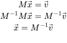
Note that M inverse multiplied by M does nothing, so we can remove both from the left side.
The problem is that calculating the inverse matrix is a computationally heavy operation, and doing it for every triangle would be wasteful and slow for more complex meshes. Luckily, we can use a shortcut in the form of the Möller–Trumbore algorithm.